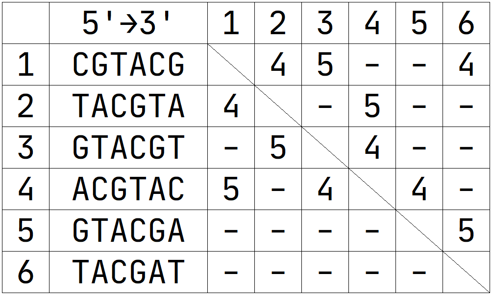
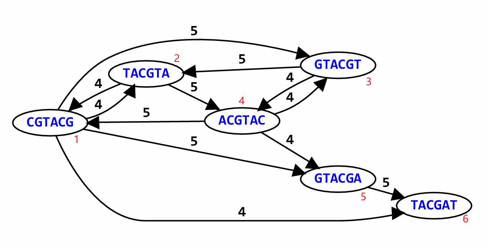
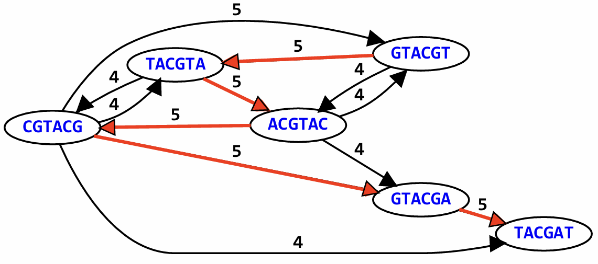
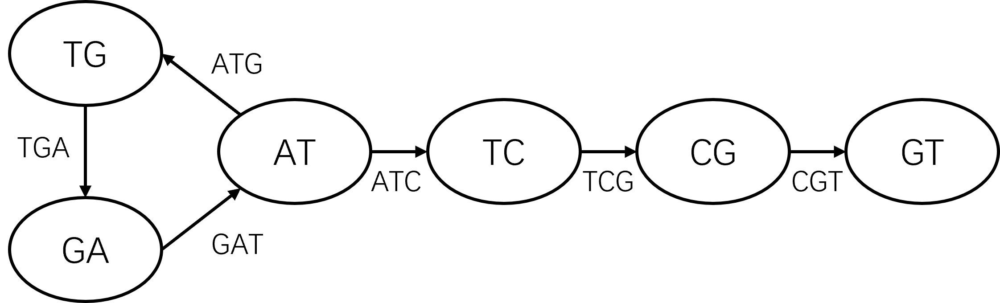
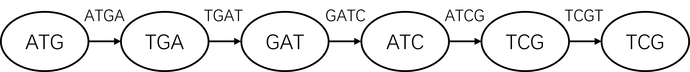

1. 前言
我们测序得到的是一大堆短读段，而算法的目的就是把它们尽可能拼接为一套完整的基因组。就像你玩拼图一样，你可以对着最终的样子一块块去拼，也可以没有参照直接从头开始根据拼图逻辑关系拼装。一个新物种的拼接往往都是后者，即从头拼接，我们将其成为 de novo 拼接（组装）。
目前，从头组装的主流方法有两种，分别为 最短公共超串 (SCS) 和 德布莱恩图 (DBG)，其中后者是目前二代测序（如 Illumina）短读段组装的主流思路。
文章参考于 Langmead Lab @ JHU 教学材料。
笔者学力有限，没有系统性修读图论课程。这篇文章仅作算法流程解析，如果想真正从头推想到这种惊为天人的算法（而不是产生“这种方法是人想到的吗？”的想法），需要较厚的数学功底！
2. SCS/OLC 算法
SLC: Shortest Common Superstring
OLC: Overlap Layout Consensus
假设我们测序得到了 100 条 reads，我们会通过比对算法构建一个 100*100 的矩阵，矩阵中记载了 reads 两两之间的重叠个数。我们下面以一个 6 reads 的矩阵为例，我们设置最小重叠阈值为 4，只记录右 4 个连续重复以上的 reads。

方向性问题是一定要注意的问题：
我们把每一条 reads 都看作为一个节点，节点与节点之间存在关系称为边，即代表了它们之间的比对碱基数。注意，节点之间是有方向性的，比较 reads （矩阵行）是从模板 reads （矩阵列）的 3' 端开始比的，这就说明了为什么我们的矩阵不对称。以 5 比 4 和 4 比 5 为例（上边比左边）：5 比 4 在 4 的 3' 端发生了 GTAC 的重叠，而 4 比 5 在 3' 端只发生了 A 的重叠，这么比是因为拼接肯定是有 5' 到 3' 端的方向性的。因此，我们会得到这样一张有向图：

2.1 哈密顿路径问题
现在，我们要做的是，寻找最短公共超串（SLC），本质上就是要在图中找一条路径，不重复地走完所有的节点（读段）。并且为了让最终拼出来的序列最短，我们需要路径上的边权重（重叠长度）之和最大。这是数学中经典的哈密顿路径问题，这个问题的核心就是找出最优解，但是这是一个 NP 完全问题。这意味着当的 reads 从 100 条变成 1 亿条时，计算机可能算到天荒地老也算不出最优解。对于此，人们开发了贪心算法进行妥协，但是贪心算法不一定能得到最优解，得到的往往是局部最优解。
NP-complete: no efficient algorithms for large inputs.
NP完全问题：对于大规模输入，不存在高效算法。
对于上图序列较少时，我们使用瞪眼法就可以找到最优解：

得到这 6 条 reads 的最终序列：GTACGTACGAT（324156）。
2.2 贪心算法
贪心算法是面对哈密顿路径问题很容易想到的办法，有一种“分而治之”的思想。贪心算法不考虑全局的最优解，只遵循一个死理：每次只挑当前矩阵里数字最大（重叠最多）的两个片段进行合并，然后更新矩阵，循环往复，直到所有片段被合并成唯一的一条序列。
矩阵中有好几对都是 5，例如 (1,3)、(2,4)、(3,2)、(4,1)、(5,6)。贪心算法会随机挑选其中一对进行合并。
我们先合并 (5,6)，得到新片段 A (GTACGAT)。我们再挑一对重叠为 5 的组合，比如 (3,2)，得到新片段 B (GTACGTA)。最后合并 (4,1)，得到新片段 C (ACGTACG)。
原始的 6 个碎片现在变成了 3 个大块。贪心算法会计算这三个大块之间的新重叠长度。我们来对比 B 和 C，重叠部分为ACGTA (长度同样是 5！)，将 B 和 C 拼合，得到更大的片段 BC (GTACGTACG)。
现在只剩最后两块，我们直接寻找它们的重叠部分：将 BC 和 A 拼合，得到最终序列 GTACGTACGAT。
通过上述推演，我们可以看到贪心算法在每一步都选择了最大重叠值（在这个例子中始终是 5）。它通过不断吞并重合度最高的碎片，最终将 6 个短片段完美组装成了一条长度为 11 的最短公共超串（SCS）：GTACGTACGAT。
如前文所说，当存在大量重复序列时，贪心算法不一定能得到最优解，得到的往往是局部最优解。且计算量过大，因此我们会选择其它拼接算法。
3. DBG 算法
如果面对数以亿计的短读段，还要构建一个 $N \times N$ 的重叠矩阵去寻找哈密顿路径，计算量会瞬间撑爆计算集群的内存。这就是为什么现代高通量测序的组装软件底层几乎全是 德布莱恩图 (De Bruijn Graph, DBG)。
我们先来看一下 DBG 算法的流程：
- 设定 k 值，把所有的 reads 都切为许多条长度为 k 的更短片段，成为 k-mers。
- 统计 k-mer 种类及出现个数，这一步的逻辑意义要仔细思考一下！
- 构建节点和边：把每一条 k-mer 的 k-1 mer 作为一个节点，k-mer 即为边。
- 构建德布莱恩图，使用欧拉路径进行最终拼接。
我们下面以两条简单的 reads 为例，来看看 DBG 到底是咋样把它们连在一起的，感受一下 k-mer 的意义。
ATGATC
GATCGT设置 k = 3 为例
1. 我们先以 k = 3 为例，把两条 reads 拆成如下的小片段：
ATGATC:
ATG
TGA
GAT
ATCGATCGT:
GAT
ATC
TCG
CGT2. 统计一下：
GAT ← 出现两次
ATC ← 出现两次这说明这两个 reads 在这一区域是连着的
3. 构建节点和边：把每个 k-mer 拆成前缀 → 后缀
| k-mer | 前缀 | 后缀 |
| ATG | AT | TG |
| TGA | TG | GA |
| GAT | GA | AT |
| ATC | AT | TC |
| TCG | TC | CG |
| CGT | CG | GT |4. 构建德布莱恩图

欧拉路径简单理解就是一笔画问题：每条边都要走，且只能走一遍。欧拉路径要比哈密顿路径计算复杂度低很多，在大数据时是一个计算机可解问题。
设置 k = 4 为例
1. 我们再来看一下 k = 4 的组装效果：
ATGATC:
ATGA
TGAT
GATCGATCGT:
GATC
ATCG
TCGT2. 统计一下：
GATC ← 出现两次3. 构建节点和边：把每个 k-mer 拆成前缀 → 后缀
| k-mer | 前缀 | 后缀 |
| ----- | --- | --- |
| ATGA | ATG | TGA |
| TGAT | TGA | GAT |
| GATC | GAT | ATC |
| ATCG | ATC | TCG |
| TCGT | TCG | CGT |4. 构建德布莱恩图

这张图其实已经是一条链了，直接拼起来就行了。
一些话
相同 k-mer 为组装提供支持，而 k-1 重叠的决定拼接顺序。
当 k 越大图越简单，但是更容易在中间断掉，在实际组装中，我们会取多个 k 值进行尝试，有点贪心算法的意味，但区别是，更大的 k 值是在全局背景下考虑的，结果是全局最优解。
在遇到大量重复序列时以及测序错误时，对两种算法的组装影响都是巨大的，我们需要做好质控以及多策略联合测序。
重叠敏感度：DBG 的底层理解就是在一个比较大的尺度下（reads 尺度）我找不到一样的重叠片段，但是我把它再分隔的小一点时（不同的 k-mers 尺度），我就找到了相同的子片段（k-mers），也就是我找到了一簇具有一部分相同的序列，再根据 k-1 进行组装排序，当我在 k 较大的情况下找不到重叠时，那我就取更小的 k。
一些废话
对学习 DBG 算法的奇怪感觉：
SCS/OLC 算法是符合“人类直觉”的。当我们玩拼图时，自然而然的做法就是拿起一块，去寻找和它边缘图案（重叠序列）吻合的另一块。这种贪心策略虽然计算缓慢，但非常踏实，你能清楚地看到每一步是怎么拼起来的。而 DBG 给人一种“不确信感”，是因为它完全违背了人类解决拼图问题的直觉，采用的是纯粹的“机器直觉”和“数学抽象”。
DBG 并不是专门为基因组测序发明的（De Bruijn graph）。Nicolaas de Bruijn 在 1946 年提出这个图论模型时，是为了解决一个纯粹的组合数学问题（如何用最短的字符串包含特定字母表的所有可能组合）。直到 2001 年左右，当二代测序技术产生海量短读段，OLC 算法彻底算不动的时候，计算生物学家 Pavel Pevzner 才敏锐地发现：基因组测序的碎片，刚好完美契合 De Bruijn 半个世纪前发明的数学图纸。
DBG 算法是一种放弃直观的物理比对，转化为高效的数学拓扑的哲学。在你有非常深的图论基础时，你在面对生物学问题时自然会想到使用 DBG，就和 Pavel Pevzner 一样。本质上，我们只是对 DBG 的一次工业化运用，而真正的 DBG，是需要及其深厚的数学功底的。因此，万物的本质是数学，路漫漫其修远兮！